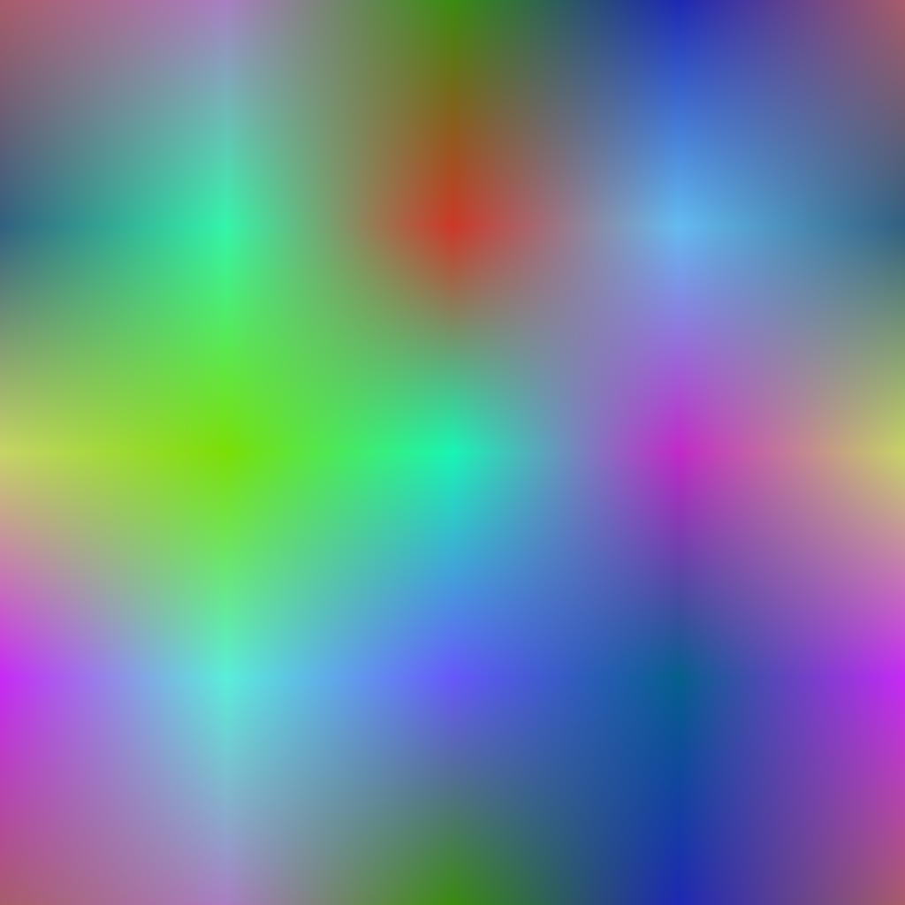
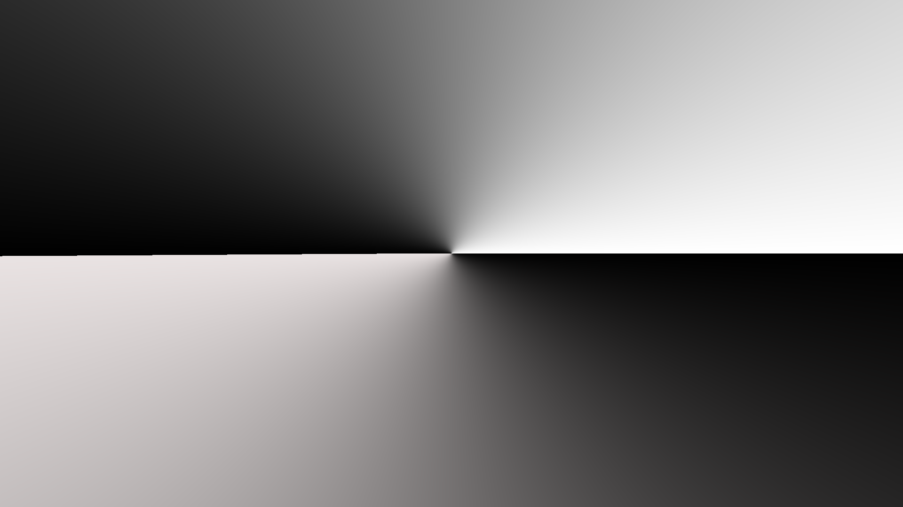
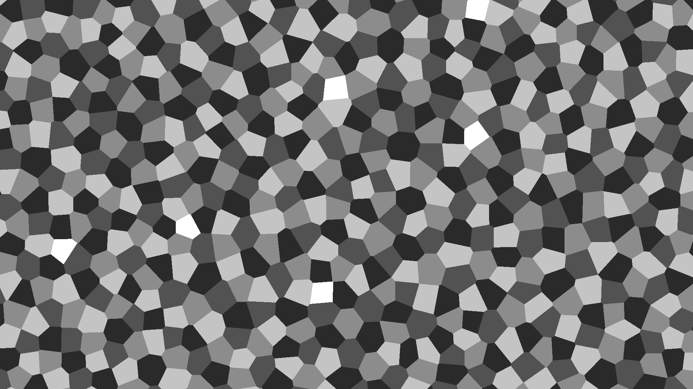

Cross-hatching Tips
The hatch texture makes a big difference in the overall effect. A good texture:
- is dense (does not have a lot of white)
- is dark
- has consistent overall value (i.e. not a lot of low-frequencies)
- tiles well
- is fine compared to the detail in the image.
This is especially true if you have only one or two layers. More layers often hide problems with the hatch texture (but of course, are more expensive to run).
It can help to apply any of these filters:
| Filter name(s) | Description | Image |
|---|---|---|
| No filter | `The edges can look very unnatural. On the flip side it can make the image easier to read. |  |
| Box blur, Gaussian blur | Makes the edges softer and gives the illusion that the marks are not perfectly within the object boundary, so the effect appears more believable. |  |
| Max, Min | Enhances the edges and can make the scene easier to read. |  |
| Power Mean | Can emulate any of the above and more, with greater tweakability. |  |
In color images, multichannel noise is better than grayscale noise, since it leads to more color variation in the final result and makes the idea of being drawn with separate colors more believable.

Interesting efects can be obtain by driving the orientation of strokes with a texture. Here are some examples.
All of the textures have been created with the texture tools that ship with the package.
| Type | Orientation Texture | Result | Tool link |
|---|---|---|---|
| Smooth noise |  |  |
|
| Angular gradient |  |  |
Tool |
| Voronoi |  |  |
Tool |